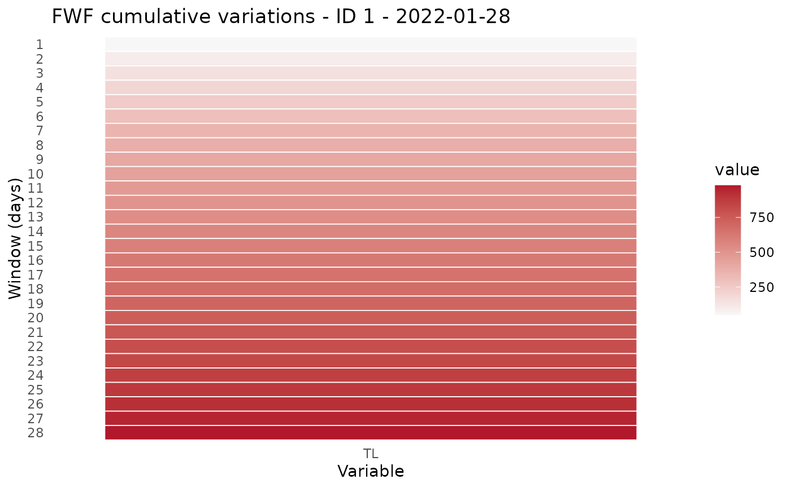

Draws the FWF of one athlete on one day as a heatmap, with the load variables on the x-axis and the windows on the y-axis, as in Figs 5 and 6 of Matas-Bustos et al. (2025).
Arguments
- fwf
output of
fwf_cumulative()orfwf_delta().- ID
the athlete to draw. Can be omitted if
fwfhas one athlete.- date
the day to draw (Date, or a character string such as
"2024-02-15").- standardise
if
FALSE(default), tiles show the values in the units of each variable. IfTRUE, each variable and window is expressed as a z-score over all the athlete's days, so variables in different units can be compared on one colour scale. The mean and standard deviation use the athlete's whole history, including days afterdate, so the z-scores are descriptive only: they are not what could have been known on that day.- title
plot title. By default, it says which FWF matrix is shown, the athlete and the day.
Details
Warm colours are high values and cool colours low values. For
fwf_delta() (and with standardise = TRUE) the scale is
centred at 0. Grey tiles are NA (not enough history). The plot is
descriptive; see fwf_cumulative() for its limitations.
It needs the ggplot2 package.
References
Matas-Bustos JB, Mora-Garcia AM, de Hoyo Lora M, Nieto-Alarcon A, Gonzalez-Fernandez FT (2025). Advanced feature engineering in Acute:Chronic Workload Ratio (ACWR) calculation for injury forecasting in elite soccer. PLoS One, 20(7), e0327960. doi:10.1371/journal.pone.0327960
Examples
data("training_load", package = "ACWR")
fwf_sum <- fwf_cumulative(db = training_load,
ID = "ID",
vars = "TL",
training_dates = "Training_Date")
plot_fwf(fwf_sum, ID = 1, date = max(training_load$Training_Date))
